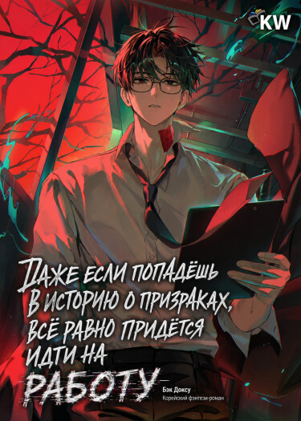
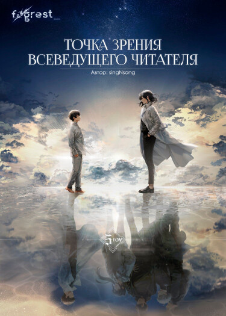
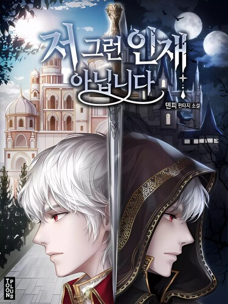
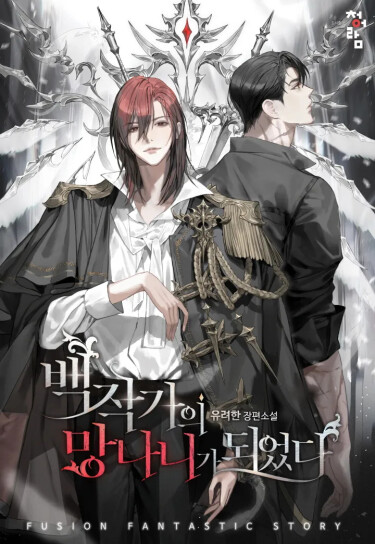
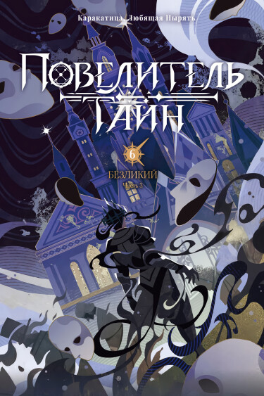
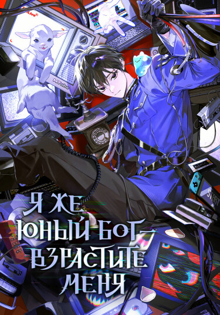

Даже если попадёшь в историю о призраках, всё равно придётся идти на работу
Описание: Мечтая отдохнуть на мероприятии по любимой вселенной, главный герой неожиданно переносится в этот фэнтезийный мир и становится новичком в крупной корпорации Day Dream Inc. Невероятные льготы, отличная зарплата и компетентное руководство быстро омрачаются мелким примечанием в контракте: компания не несёт ответственности за гибель сотрудников. И хотя благодаря знанию сюжета герой стремительно делает карьеру среди привидений и аномалий, его единственное желание — бросить работу мечты и вернуться домой.
Жанр: Комедия, Мистика
Статус: Выпускается

Точка зрения Всеведущего читателя
Описание: Ким Докчжа — единственный человек, дочитавший до конца веб-роман из трёх тысяч глав, длившийся десять лет. Сразу после финальной главы автор присылает ему полную копию текста, а описанный в нём апокалипсис мгновенно становится реальностью. Вооружившись уникальным знанием сюжета, Докчжа начинает отчаянную борьбу за жизнь в мире, где сценарии игры со смертью диктует сама вселенная.
Жанр: Экшен, Фэнтези
Статус: Завершено

Я не тот, за кого меня принимают
Описание: Деон Харт славится как непобедимый, кровожадный боец и идеальный командир, заслуживший безоговорочное доверие союзников и уважение врагов. На самом же деле он смертельно болен и слаб, а любое физическое или эмоциональное напряжение доводит его буквально до кровавой рвоты. Напряжение растёт, ведь окружающие отказываются видеть в нём немощного человека, непрестанно принимая его мучения за проявления жуткой, сдерживаемой силы.
Жанр: Фэнтези, Комедия
Статус: Выпускается

Я стал графским ублюдком
Описание: Очнувшись внутри популярной новеллы, герой обнаруживает себя в теле никчёмного графского сына — местного отброса, которому суждено быть избитым до полусмерти главным героем. Ситуация осложняется тем, что родная деревня вот-вот будет уничтожена ради развития сюжета и становления истинного протагониста. Понимая всю плачевность своего положения, новый хозяин тела решает переписать судьбу и использовать знания о мире себе во благо.
Жанр: Фэнтези, Приключения
Статус: Выпускается

Повелитель тайн
Описание: Оказавшись в альтернативном мире эпохи пара, магии и карт Таро, обычный человек Чжоу Минжуй перерождается в теле Клейна Моретти. Погружаясь в опасные тайны мировых церквей и скрытого зла, он постепенно обретает могущество с помощью загадочных Потусторонних зелий. Это история восхождения легендарного «Шута» — фигуры с нулевым номером и безграничным потенциалом.
Жанр: Мистика, Фэнтези
Статус: Завершено

Я же юный бог — взрастите меня
Описание: Бывший киберспортсмен, потерявший карьеру из-за травмы и годами живший в любимой игре, неожиданно переносится в её реальную версию. Вот только вместо игрока он становится самой Системой планеты «Земля», обязанной регистрировать людей без каких-либо инструкций. Чтобы разобраться в происходящем, герой решает пройти этот мир насквозь, ведь он знает его вдоль и поперёк.
Жанр: Повседневность, Комедия
Статус: Выпускается